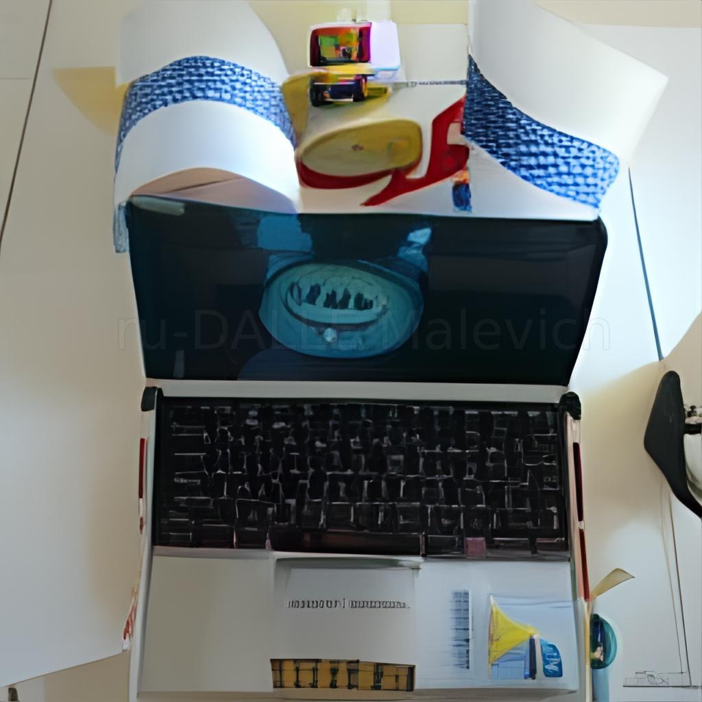

Роботы с ИИ
Будущие технологии в области искусственного интеллекта и робототехники будут оказывать на жизнь человека значительное влияние. Возможность проявлять на самому наиболее совершенном уровне во всех областях быта и деятельности представляет собой невероятное преимущество.
Искусственный интеллект будет применяться во всех областях, в вопросах, касающихся науки, исследований, машинного обучения, нечеткой логики и программирования. Это может помочь в создании таких роботов, которые смогут самостоятельно решать проблемы и принимать решения, основываясь на информации, получаемой из среды.
В будущем технологии искусственного интеллекта также возможно будет использовать для предоставления услуг по решениям различных задач. Например, поисковая система будет анализировать различные данные и выдавать наиболее подходящие результаты. Так же такие технологии могут быть использованы для удаленного контроля и оптимизации процессов в различных сферах.
Кроме того, возможно, будут разрабатываться роботы, способные выполнять определенные функции и тестирования. Например, медицинские роботы будут использоваться для диагностики и лечения различных заболеваний, предоставления консультаций или оказания показаний для дополнительного исследования.
Разработки будущих технологий в области искусственного интеллекта и робототехники помогут решать очень сложные проблемы, позволит автоматизировать многие процессы, обеспечив более высокий уровень комфорта и безопасности людям. Благодаря этим технологиям будущее будет более ярким и эффективным.